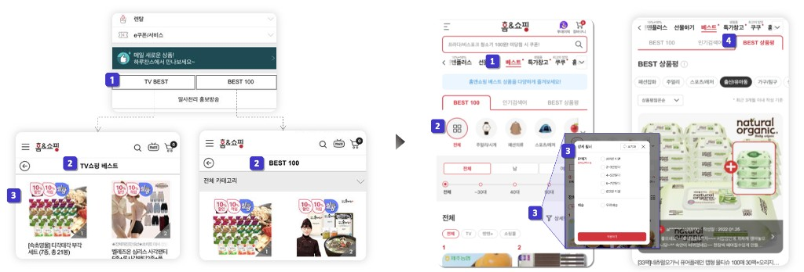

Project 02 · e-Commerce · Personalization
홈앤쇼핑 베스트 전문관 런칭
개요
트렌드 파악을 원하는 고객 니즈를 충족하기 위해 고객 맞춤형 상세 베스트 랭킹 시스템을 도입하여 서비스 런칭.
문제
- 접근성 저하 — LNB 최하단에 위치, 베스트 랭킹이 TV쇼핑 베스트 / BEST100 매장으로 이원화되어 있고 상품 호출 기준이 상이
- 개인화 부재 — 단순 인기 상품 나열로는 다양한 고객 니즈 충족에 한계
가설
고객 설문과 실적 데이터 분석 결과, GNB 매장으로 통합 + 성/연령/카테고리별 정교한 필터를 제공하면, 고객 맞춤형 큐레이션 경험이 강화되어 주문율이 비약적으로 상승할 것이라 판단.
기여
- 당위성 확보 — 고객 설문 + 당사 실적 데이터 분석 + 동종업계 랭킹 사례 비교 분석
- 상위 기획 — 보편적 큐레이션 매장으로 정의(기존 전문관과 차별화), GNB 매장으로 통합 및 상품 호출 기준 통일
- 업데이트 주기 정의 — 기간별 데이터 대조 분석으로 BEST100 · 인기검색어 · 상품평 갱신 주기 설정
- 상세 설계 — 성 / 연령 / 상품 카테고리별 랭킹 상품을 선택적으로 조회 가능하게 구성, 가격 / 무료 배송 등 상세 필터 추가
- 상품평 영역 정책 — 데이터를 기간별로 추출 / 대조 분석해 누적 기준 설정. 어뷰징 이슈 대비 운영자 수동 관리 BO 추가
- 일정 / R&R — 프로젝트 일정 수립 및 유관 부서 R&R 협의, QA · 배포 리딩
+1,748%
런칭 후 3개월 · 전년 동기 대비 일평균 주문 건수
+778%
같은 기간 · 일평균 주문 금액
Reflection
"정렬과 필터를 정교하게 만드는 것" 자체가 곧 사업 임팩트라는 것을 확인. 데이터 기준 통일은 사용자 신뢰를 만드는 첫 단추다.
관련 화면

AS-IS: TV쇼핑 베스트 · BEST100 이원화 매장 → TO-BE: GNB 통합 베스트 전문관, 성/연령/카테고리 필터 및 상세 매장 뷰
AS-IS · 기존
- LNB 최하단에 위치하여 접근성 저하
- 베스트 랭킹 전문관이 TV쇼핑 베스트, BEST100 매장으로 이원화
- 상품 호출 기준 상이하며, 일부 상품 중복
- 단순 베스트 상품 나열로 고객의 이목을 끌기에 역부족
TO-BE · 리뉴얼
- GNB 매장으로서의 통합 및 상품 호출 기준 조건 통일
- 성/연령대/상품 카테고리별 랭킹 상품을 선택적으로 조회 가능하게 구성하여 고객 편의성 강화
- 상세 필터 추가 (가격/무료 배송 여부 등 추가 선택 가능)
- 베스트 상품평 영역 정책 설계 — 기간별 대조 분석 누적 기준 설정 · 어뷰징 대비 운영자 수동 관리 BO 기능 추가